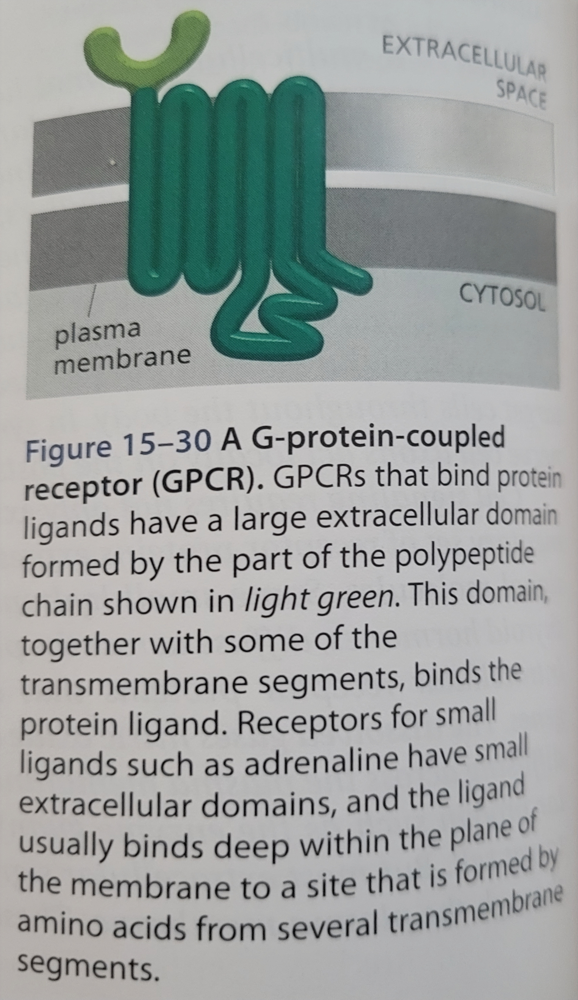
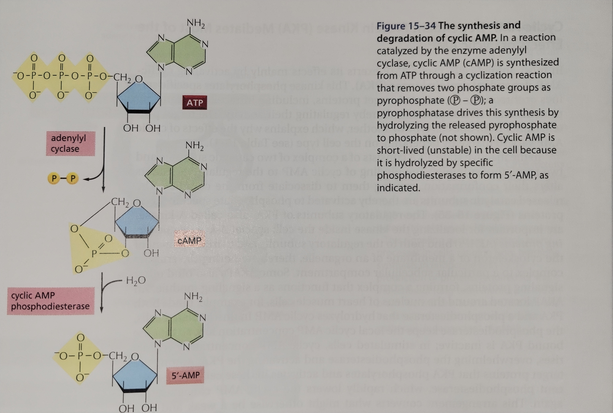
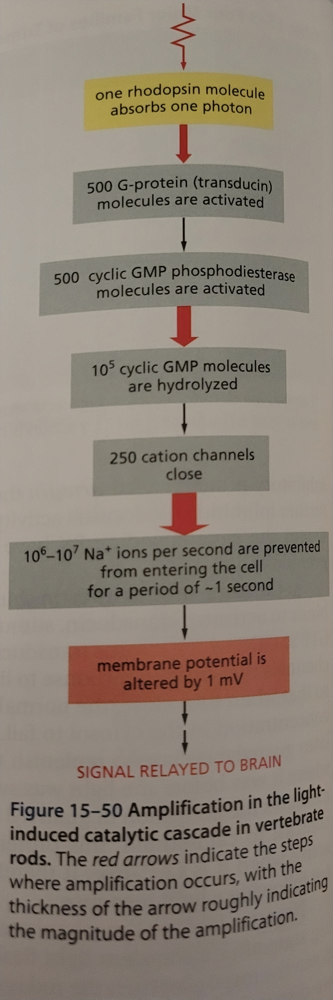

Lesson 11: Signaling Through G-protein-linked Pathways
Signaling through G-protein-coupled Cell-surface…
There are more than 700 GPCRs in humans.
A single ligand can activate multiple GCPRs.
A GPCR consits of a single polypeptide chain threaded seven times across the cell membrane. All GPCRs use G proteins to relay signals to cell interior.

Trimeric G proteins relay signals from GPCRs
The three subunits of a trimeric G protein are the \(\alpha\) subunit, the \(\beta\) subunit, and the \(\gamma\) subunit.
The \(\alpha\) subunit is bound to a GDP when the G protein is inactive.
When the G protein is activated the \(\alpha\) subunit releases its bound GDP and binds to a GTP. The \(\alpha\) subunit is a GTPase and hydrolyzes its bound GTP. When the bound GTP is hydrolyzed to a GDP the G protein becomes inactive.
The \(\beta\) and \(\gamma\) subunits form a \(\beta \gamma\) subunit. In most cases the conformational change that occurs upon the activation of the G protein dissociates the \(\alpha\) subunit from the \(\beta \gamma\) complex. In some situations, however, the \(\alpha\) subunit remains associated with the \(\beta \gamma\) complex.
Regulators of G protein signaling (RGS) act as \(\alpha\)-subunit-specific GTPase-activating proteins (GAPs) and they help shutoff G protein mediated responses.
Some G proteins regulate…
Adenylyl cyclase is a membrane bound enzyme that synthesizes cyclic AMP. Cyclic AMP is rapidly and continuously destroyed by cyclic AMP phosphodiesterase.
To increase the concentration of cAMP in a cell, extracellular singaling molecules increase the activity of adenylyl cyclase against a background of cAMP phosphodiesterase activity.
To control cAMP activity GPCRs use G\(_s\) and G\(_i\). Stimulatory G protein or G\(_s\) is used to increase cAMP activity. To decrease cAMP activity Inhibatory G protein or G\(_i\) is used.
Cholera toxin increase cAMP activity by modifying the \(\alpha\) subunit of G\(_s\) by transferring ADP ribose from intracellular NAD\(^+\). The ADP ribose prevents the \(\alpha\) subunit from hydrolyzing its bound GTP, causing adenylyl cyclase to be constantly active. The prolonged elevation of cAMP in intestinal epithelial cells causes an increase of water and Cl\(^-\) in the gut leading to severe diarrhea.
Pertussis toxin catalyzes the ADP ribosylation of the \(\alpha\) subuint of G\(_i\). This prevents G\(_i\) from interacting with receptors resulting in the G protein reaining bound to its GDP, diabling its ability to regualte its target proteins.

Cyclic-AMP-Dependent Protein Kinase (PKA)
Cyclic-AMP-Dependent Protein Kinase (PKA), in an inactive state, is made up of two catalytic subunits and two regulatory subunits (also called A-kinases) that form a complex. The binding of cAMP causes the dissociation of the regulatory subunits by changing their conformation. This activates the PKA.
An A-kinase anchoring protein (AKAP) located around the nucleus of a heart cell binds both PKA and phosphodiesterase that hyrdrolyzes cAMP. In an unstimulated cell the phospgodesterase keeps the cAMP concentration low to keep the PKA inactive. In a simulated cell the cAMP concentration is rapidly elevated activating the PKA. The PKA in turn activates the bound phosphodiesterase leading to a decrease in the cAMP concentration. This allows for a strong, brief, local pulse of PKA activity as apposed to a long, weak, general period of PKA activity.
Cyclic AMP response element or CRE is a short DNA sequence found in the gene regulatory region of many cAMP activated genes. CRE-binding protein (CREB) recognizes the CRE. When PKA is activated by cAMP, it phosphorylates CREB on a single serine. The phosphorylated CREB then recruits CREB-binding protein (CBP) which stimulates the reanscription of the targeted genes.
Some G Proteins Activate an Inositol…
PIP\(_2\) is present in small amounts in the inner half of the plasma membrane bilayer.
G\(_q\) activates phospholipase C-\(\beta\) (PLC\(\beta\)) a membrane bound enzyme that is often activated to exert the effects of GPCRs. G\(_q\) activates PLC\(\beta\) in a similar way to G\(_s\) activating adenylyl cyclase. PLC\(\beta\) cleaves PIP\(_2\) into inositol 1,4,5-triphosphate (IP\(_3\)) and diacylglycerol (DAG).
IP\(_3\) acts as a small intracellular mediator. It opens IP\(_3\)-gated Ca\(^+{^2}\) channels (also called PIP\(_3\) receptors) on the ER to release Ca\(^+{^2}\) found in the ER into the cytosol. This quickly increases the Ca\(^+{^2}\) concentration of the cytosol.
DAG also acts as a small intracellular mediator. DAG, however, remains embedded in the plasma membrane where it has several potential roles.
DAG can be cleaved to release arachidonic acid that can act as a signal molecule or be used to synthesize eicosanoids. Eicosanoids can serve many biological roles particularly in the pain and inflammatory responses.
DAG can activate the Ca\(^+{^2}\) dependent serine/threonine protein kinase called protein kinase C (PKC).
Ca2+ Functions as a Ubiquitous Intracellular Mediator
Ca\(^+{^2}\) from the ER enters the cytosol either through PIP\(_3\) receptors or ryanodine receptors. Ryanodine receptors are activated by Ca\(^+{^2}\) binding and thereby amplifying the Ca\(^+{^2}\) signal.
All eukaryotic cells have Ca\(^+{^2}\)-pumps that use energy from ATP hydrolysis to pump Ca\(^+{^2}\) out of the cytosol. Some cells also have additional Ca\(^+{^2}\) transport proteins in their plasma membrane to pair the efflux of Ca\(^+{^2}\) with the influx of Na\(^+\).
Ca2+/Calmodulin-Dependent Protein Kinases…
Calmodulin consists of a highly conserved single polypeptide chain with four high-affinity Ca\(^+{^2}\)-binding sites. Calmodulin under goes a conformational change when Ca\(^+{^2}\) binding occurs. Two or more Ca\(^+{^2}\) must bind to calmodulin for it to adopt its active conformation. A tenfold increase in Ca\(^+{^2}\) typically causes a fifty fold increase in calmodulin activity.
Ca\(^+{^2}\)/calmodulin-dependent kinases (CaM-kinases) can act as a molecular memory device because after they are activated by Ca\(^+{^2}\)/calmodulin they remain active after the Ca\(^+{^2}\) signal has decayed.
Some G proteins Directly Regulate Ion Channels
Activation of muscarinic receptors lead to reduced contractility of heart muscle because they activate G\(_i\) proteins. The \(\alpha\) subunit of the G\(_i\) inhibits adenylyl cylcase. The \(\beta \gamma\) complex bind to K\(^+\) channels keeping them open, this makes it harder to depolarize the cell ans contributes to the inhibatory effect of acetylcholine on the heart.
Intracellular Mediators and Enzymatic Cascades…

GPCR Desensitization depends…
The three forms of GPCR desensitization are:
Receptor inactivation
Receptor sequestration
Receptor down-regulation
GPCR kinases (GRKs) play a role in GPCR desensitization by phosphorylation.
Phosphorylated GPCRs bind with a high affinity to arrestins that can prevent the activation of the receptor by G proteins. Arrestins can alo serve as an adaptor protein to help couple the receptor tho clathrin-dependent machinery inducing receptor-mediated endocytosis.